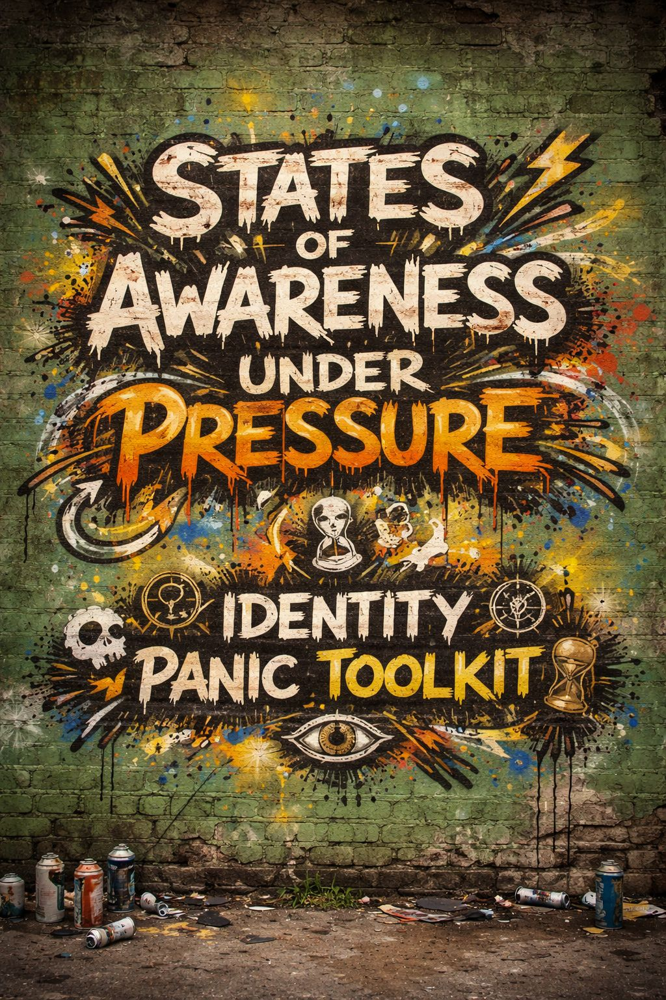

🗺️ IPT: STATES OF AWARENESS UNDER PRESSURE

Each one isn’t a personality.
It’s a position in the system.
People move between them.
Sometimes in minutes. Sometimes over years.
- 🔮 detachment / drift
(sees the system without gripping it)
- 🧷 defiance
(chooses expression regardless of approval)
- 🪨 endurance
(carries awareness under sustained pressure)
- 👵 compression
(holds intensity internally without outward release)
- 🚛 motion
(keeps moving while processing in real time)
- 🪞 reflection
(sees self inside the system, studies the mirror)
- 🔥 ignition
(awareness converts into action)
- 🧊 suspension
(paused state, nothing resolves, nothing escalates)
- 🌪 escalation
(pulled into velocity, awareness overridden)
- 🧬 integration
(multiple identities coexist without collapse)
- 🎭 performance
(aware… still playing roles intentionally)
- 🕳 collapse
(system overload, identity destabilizes)
- 🧱 reconstruction
(rebuilding meaning piece by piece)
- 📡 transmission
(turning awareness outward, signaling to others)
- 🛡 containment
(holds intensity without spreading it)
- 🧭 orientation
(finding direction after confusion)
- 🧨 rupture
(sudden break from identity or group alignment)
- 🌱 emergence
(new patterns forming, unstable but alive)
- 🛰 observation
(fully watching, minimally participating)
You’re not stuck.
You’re not broken.
You’re somewhere on the map.
🧠 Awareness moves
⚙️ Pressure shifts
📡 States change
The question isn’t:
“Who am I?”
It’s:
👉 “Where am I right now?”
👉 “And where could I move next?”
← Back to Index